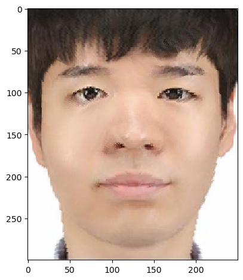

This is the page for Project 3. Face Morphing
Back to PortfolioIn this project, I will fiddle with a lot of faces.
First, I will define the correspondences between two images - myself and our great TA, Ryan. I have used the provided online correspondence finder, and Delaunay triangulation is based on the midway-interpolated points.
With a set of interpolated correspondence points (and its Delaunay triangluation), first I find affine transformations from intermediate to original images for each simplex.
Then, for every pixels in each simplex, I apply the corresponding affine transformation and apply a bilinear interpolation to 'fetch' the pixel value from original images.
Finally, cross-dissolving with an equal weight, I obtain the 'mid-way face'. This process can be generalized by changing the warp fraction and the cross-dissolving fraction.
I follow the standard instruction - 45 frames with 30fps for the .gif file generation.

I use FEI Face dataset which contains face images of 200 people. For each person, neutral and smiling face images are provided.
First, I obtain interpolated correspondence points by averaging (unweighted) corresponding point coordinates of all 200 images.
Then, I warp all images to the interpolated shape and cross-dissolve with equal weights to obtain the 'mean face'.
From left to right, all 200 images, the male (~ 50 images selected), the female (~ 50 images selected). First row is the neutral face, and the second row is the smiling face.
Below is the example data (3 people) with the original shape (the first row) and the interpolated shape (the second row).

Now, with my face (1st) and the mean face (2nd), warping my face into the mean face shape gives the 3rd figure, and warping the mean face into my face shape gives the 4th figure.
When setting the mixing fraction alpha = 0 for the original shape and alpha = 1 for the mean shape, I can extrapolate my face by exploring alpha < 0 and alpha > 1.
Below is the example of alpha = -0.5, -0.25, 1.25, and 1.5. Note that I don't cross-dissolve; only the shape warping is applied. Also, the mean shape of male dataset is used.
I have used the mean face of Korean female (found from the Internet) to change my face image.
From left to right, morphing just the shape, just the appearance, and both. For morphing just the shape, cross-dissolving is not applied.
For morphing just the appearance or both, cross-dissolving with equal weights (0.5) is applied; if the cross-dissolving with full weight on the mean face is used, my face completely vanishes; this is why 0.5 is used.
Eigenface calculation relies on a consistent pixel location, so I have warped all images to the mean interpolated shape in the first step. Also, zero-centering removes DC component of the face.
I have used the FEI Face dataset's neutral expression 200 images to find the eigenfaces. After applying a truncated SVD (k = 20) to the zero-centered data matrix, below is a cumulative explained variance ratio.
Cumulative ratio at the 20th principal component is 0.82, explaining sufficient variation of the face dataset.
Below are the first 20 eigenfaces.

First, I try image reconstruction with my face image. Before applying SVD, warping into the mean shape and zero-centering are applied.
However, even when I increase k = 200 (full rank), the reconstructed face of myself is not perfect; left is the original face, and right is the reconstructed face (i.e. multiplying Vt.T and then Vt, where Vt is the transpose of the right singular matrix)
This indicates a low (200)-dimensional space spanned by the dataset is not enough to represent my face;
indeed, the ratio of two norms - my face projected onto the low-dimensional space versus the delta amount, measured by the Frobenius norm, is 0.18.
This might be due to the limited data distribution of the dataset that doesn't capture faces from diverse race / ethnicity.
Still, I can try making a carricauture of myself by (1) projecting my face onto the low-dimensional space with Vt, (2) scaling particular principal components by a factor (exaggeration), and (3) reconstruct by multiplying Vt.T.
Below is the result of the caricature with scaling the principal component 1, 11, 13 by a factor of 3, 20, 10, respectively. Interesting morphings are observed; and the result also partially explains each component's role;
for example, the first principal component seems to control the brightness of the face, and the 13th component seems to be related with beard.
Compared with the normal basis, extrapolating with the eigenface basis controls specific 'features' of the face better. With normal basis, unless the 'mean' face dataset is well curated (i.e. collecting only the faces with beard),
the extrapolation cannot selectively control the features, while the eigenface automatically extracts major latent dimensions of the face. On the other hand, eigenbasis for extrapolation lacks smooth and real-looking morphing,
as the dimensionality reduction is too aggressive to capture the subtle variations of the human face while those minute variations, well captured by the normal basis, are essential for the realistic morphing.